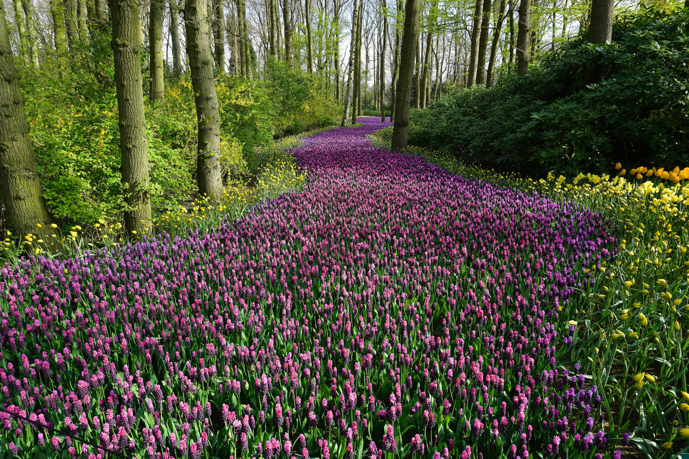

Alpine meadow in full summer bloom
Meadows represent some of Earth's most biodiverse ecosystems, where grasses and wildflowers create vibrant mosaics of color. These open habitats form where conditions prevent tree growth - at high elevations near mountain peaks, in poorly drained areas adjacent to rivers, or in special soil conditions. A single acre of wildflower meadow can contain over 100 plant species and support 3,000 individual insects at any given moment during peak season.
Seasonal changes transform meadows dramatically. Spring brings delicate blooms like crocuses, followed by summer's riot of colors from poppies, lupines, and daisies. In autumn, grasses turn golden while seed heads provide food for birds. This constant change makes meadows dynamic laboratories for studying plant-animal interactions and climate change impacts.
Meadow Types
- Alpine meadows: Found above tree line with hardy, low-growing plants Floodplain meadows: Periodically inundated by nearby waterways
- Coastal meadows: Salt-tolerant species near ocean shores
- Agricultural meadows: Traditional hayfields rich with native species
These habitats serve as crucial corridors connecting forest fragments and providing stepping stones for pollinators. Many butterfly species depend entirely on specific meadow plants during their larval stages.
Historically, meadows were maintained by grazing animals and periodic fires. Today, conservationists use controlled burns and seasonal mowing to preserve these habitats. Some of Europe's most beautiful meadows are actually ancient human creations, maintained through traditional farming practices that prevent woody plant encroachment.
Explore how meadows transition into other ecosystems like woodland edges or dry grasslands.
Return to homepage.